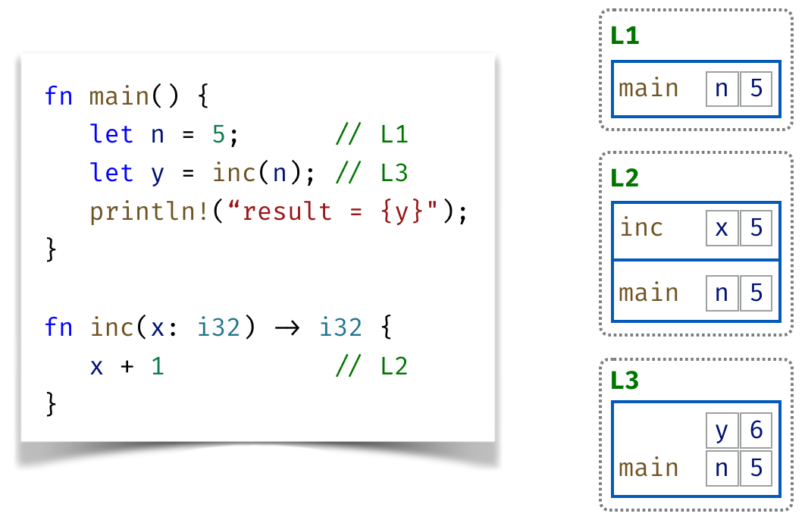
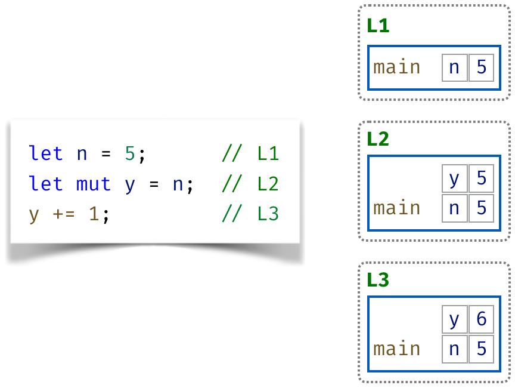
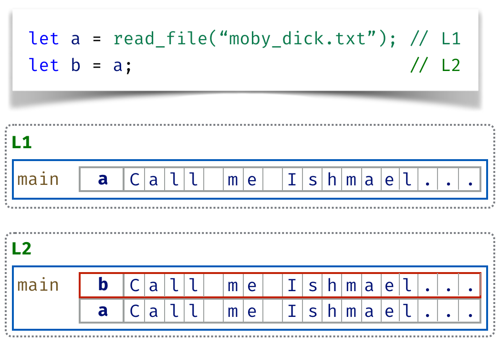
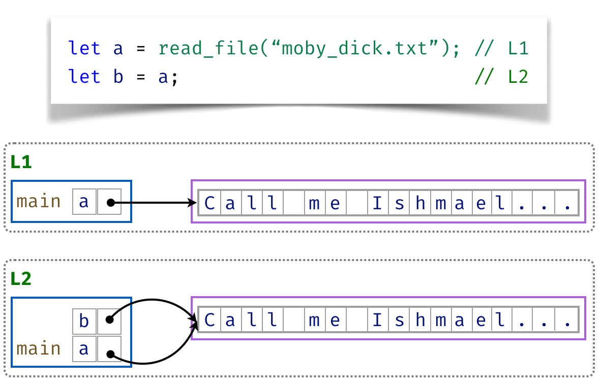
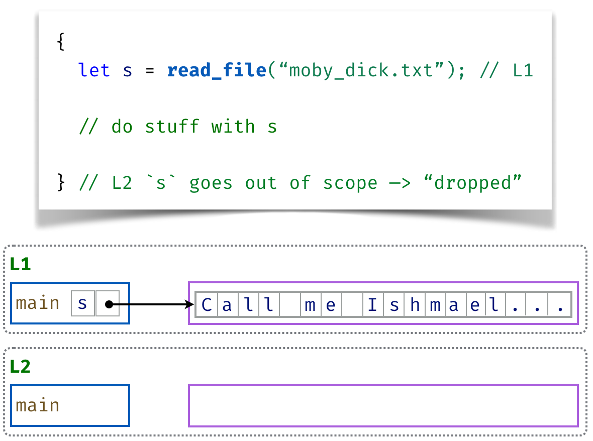
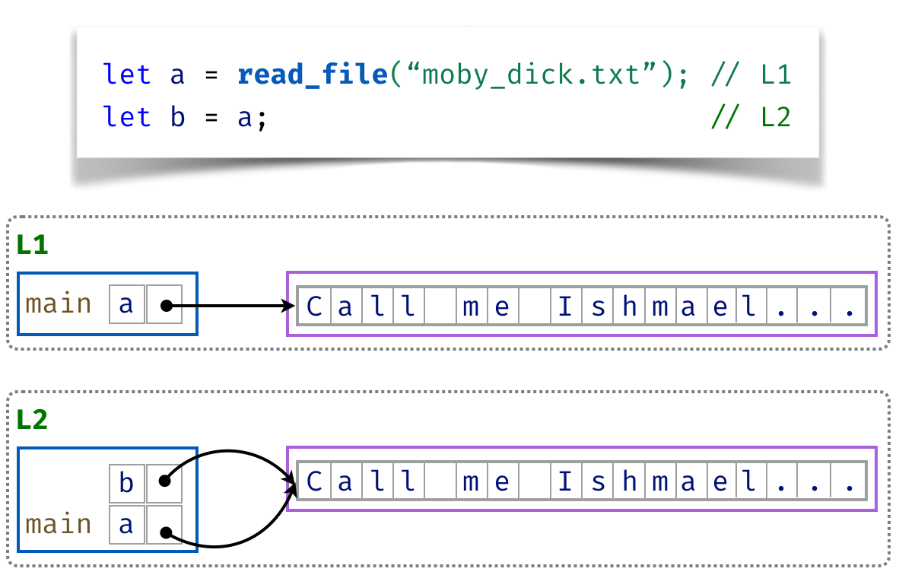
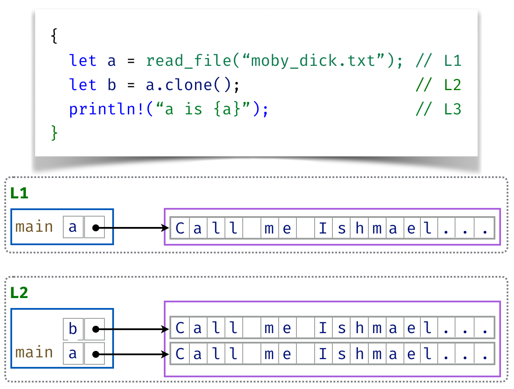

Ownership and Borrowing
Rust’s unique approach to memory management
What is memory management?
(and why is it hard?)
Little vs Big Data
Little Data
- fixed size, known at compile time
bool,char,i32,f64,usize, …- copies quickly
Big Data:
- variable size, unknown at compile time
String,Vec<T>,HashMap<K,V>, …- copies slowly
Most PLs manage memory with the stack and heap.
Little Data Lives on the Stack
fn main() {
let n = 5; // L1
let y = inc(n); // L3
println!("n: {}, y: {}", n, y);
}
fn inc(x: i32) -> i32 {
x + 1 // L2
}
Variables live in stack frames mapping variables to values
- At
L1frame formainholdsn = 5 - At
L2frame forincholdsx = 5 - At
L3frame formainholdsn = 5andy = 6
Frames are organized into a stack of currently-called-functions.
- At
L2frame formainabove the frame forinc
Entire frame is freed or deallocated on function return
Little Data Copies Quickly
When an expression reads a little-data variable, its value is copied from its slot in the stack frame

At
L2the value ofnis copied intoyAt
L3the value ofnis left unchanged, even after changingy
Big Data Copies Slowly
Cannot copy big data quickly!

Big data lives on the Heap
Big data is stored on the heap

Can quickly copy references to data!
… but a and b refer to the same data on the heap
Sharing is Hard!
Why?
Sharing with Manual Management (C, C++)
Programmer explicitly alloc and free memory
- Zero runtime overhead
Problem: Unsafe
- Free too early (Dangling references!)
- Forget to free (Leaks!)
- Double-free (Vulnerabilities!)
Sharing with Garbage Collection (Java, Python, Haskell)
Runtime that looks for and reclaims unused memory
- Memory safe (can only use “valid” memory that has not been freed)
as the program runs; in other languages,
Problem: Unpredictable
- GC can kick in and introduce pauses at unpredictable times
Sharing breaks local reasoning
(But my personal reason…)
Ground can change beneath your feet!
(Makes concurrency really hard)
Ownership: Rust’s Secret Sauce: Ownership
The key idea in Rust’s ownership system is in three rules:
- Each value in Rust has an owner.
- There can only be a single owner at any time.
- Value is dropped (reclaimed) when owner goes out of scope.
Unique value proposition: memory safety without GC
Ownership Ingredients
- Scope
- Drop
- Ownership
- Move/Transfer
1. Scope
Scope is the “area” within a program for which a name is valid.
{ // s not valid here; not yet declared
let s = String::from("hello"); // s is valid from this point on
// ...
// do stuff with s
// ...
} // scope is over; s no longer valid
2. Drop/Free when Owner Goes Out of Scope
Scope is the “area” within a program for which a name is valid.
{ // s not valid here; not yet declared
let s = String::from("hello"); // s is valid from this point on
// ...
// do stuff with s
// ...
} // scope is over; DROP/FREE `s`
3. (Unique) Ownership
Heap data has a single unique owner … assignment transfers or moves ownership.

QUIZ
What will be printed by this code?
fn main() {
let a = String::from("hello"); // `a` is the unique owner
let b = a; // ownership of heap data MOVED to `b`
println!("a is {a}"); // what will be printed?
}
4. Move/Transfers Ownership
Assignment moves ownernship … cannot then use a moved value
fn main() {
let a = String::from("hello"); // `a` is the unique owner
let b = a; // ownership of heap data MOVED to `b`
println!("a is {a}"); // what will be printed?
}Compiler rejects with error:
error[E0382]: borrow of moved value: `a`
--> src/main.rs:20:20
|
18 | let a = String::from("hello");
| - move occurs because `a` has type `String`, which does not implement the `Copy` trait
19 | let b = a;
| - value moved here
20 | println!("a is {a}");
| ^ value borrowed here after move
|
help: consider cloning the value if the performance cost is acceptable
|
19 | let b = a.clone();
| ++++++++Notes
Stringdoes not implement theCopytrait.- Consider
.clone()if you want to copy data instead of moving it.
4. Clone (if you really can’t move …)
Assignment moves ownernship … cannot then use a moved value
… if you must then you have to explicitly clone the data
fn main() {
let a = String::from("hello"); // `a` is unique owner
let b = a.clone(); // `b` is unique owner of a clone
println!("a is {a}"); // OK
}
Recap: Copy vs Move
Consider these two examples:
Little Data Is Copied
{
let x = 5; // x comes into scope
let y = x; // x is copied into y
println!("x is {x}"); // x and y are both valid
}Big Data is Moved
let x = String::from("hello"); // x comes into scope
let y = x; // x is moved into y
println!("x is {x}"); // ERROR: `x` value is moved!Re-Assignment
What happens on re-assignment?
fn main() {
let mut s = String::from("hello"); // s comes into scope
s = String::from("ahoy"); // s is re-assigned
// old value DROPPED
println!("{s}, world!"); // prints "ahoy, world!"
}QUIZ: Function Calls
What happens when we run?
fn main() {
let mut s = String::from("hello");
call_me_string(s);
println!("{s}, world!");
}
fn call_me_string(x: String) {
println!("Thanks for calling me with {x}!");
}
QUIZ: Function Calls
What happens when we run?
fn main() {
let mut s = 42; // s comes into scope
call_me_i32(s);
println!("{s}, world!"); // prints "ahoy, world!"
}
fn call_me_i32(x: i32) {
println!("Thanks for calling me with {x}!");
}
Fn Parameters: Little Data ==> Copy
What happens when we run?
fn main() {
let mut s = 42;
call_me_i32(s); // `s` is COPY into `x`
println!("{s}, world!"); // prints "42, world!"
}
fn call_me_i32(x: i32) {
println!("Thanks for calling me with {x}!");
}Try it out on aquascope
sis copied into parameterxxgets printed …sis still valid after the call
Fn Parameters: Big Data ==> Move
What happens when we run?
fn main() {
let mut s = String::from("hello"); // s comes into scope
call_me_string(s); // s is MOVED into `x`
println!("{s}, world!"); // compile-time error!
}
fn call_me_string(x: String) {
println!("Thanks for calling me with {x}!");
// x goes out of scope and is DROPPED
}Try it out on aquascope
sis moved into parameterxxgets printed …sis not valid after the call!
QUIZ
What happens when we run the following program?
fn burp() -> String {
let s = String::from("burp"); // s comes into scope
s // s is moved out to the caller
}
fn say_length(z: String) {
let n = z.len(); // get length of z
println!("length of z = {n}");
}
fn main() {
let s1 = burp();
println!("(a) s1 is {s1}");
say_length(s1);
println!("(b) s1 is {s1}");
}
Returns Copy (Little) or Move (Big) Too!
fn burp() -> String {
let s = String::from("burp"); // `s` comes into scope
s // `s` is moved out to the caller
}
fn say_length(z: String) {
let n = z.len(); // get length of `z`
println!("length of z = {n}");
} // `z` goes out of scope and is DROPPED
fn main() {
let s1 = burp(); // burp() moves its return into s1
println!("(a) s1 is {s1}");
say_length(s1); // s1 is moved into say_length()
println!("(b) s1 is {s1}"); // ERROR: s1 value is MOVED!
}QUIZ How to modify say_length so we can print s1 after the call?
Don’t drop, return

fn say_length(z: String) -> String {
let n = z.len(); // get length of `z`
println!("length of z = {n}");
z // `z` MOVED to return value
}
fn main() {
let s1 = burp(); // burp() moves its return into s1
println!("(a) s1 is {s1}"); // prints "(a) s1 is burp"
let s1 = say_length(s1); // s1 is moved into say_length()
println!("(b) s1 is {s1}"); // prints "(b) s1 is burp"
}… but seriously, this is rather clunky!
How to simplify say_length?
What do we want say_length to do instead?
Material Inspired by
- https://rust-book.cs.brown.edu/ch04-01-what-is-ownership.html
- https://doc.rust-lang.org/book/ch04-01-what-is-ownership.html